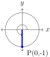
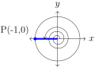

Section 1.3 Unit Circle
In this section we will introduce the trigonometric functions using the Unit Circle.
Subsection 1.3.1 Unit Circle
Definition 1.3.1. Unit Circe.
The unit circle is a circle whose radius is 1 and whose center is at the origin of a rectangular plane (or \(xy\)-plane). The equation for the unit circle is
Let \(t\) be a real number. Recall that a radian measure of a central angle, \(t\text{,}\) is defined as the ratio of the arc length \(s\) to the radius \(r\text{.}\) So, \(t=\frac{s}{r}\text{.}\) In the unit circle, the radius is \(r=1\text{,}\) and the angle in radians is equal to the arc length, \(t=s\text{.}\) We will let \(t\) be in radians. The circumference of the unit circle is \(2\pi r=2\pi \cdot 1=2\pi\text{.}\)
If \(t\geq0\text{,}\) we can imagine wrapping a line around the unit circle and mark off a distance of \(t\) in a counterclockwise direction, and label that point \(P(x,y)\text{.}\) Here, \(P(x,y)\) is the terminal point. If \(t\lt 0\) then we would wrap in a clockwise direction.
If \(t>2\pi\) or \(t\lt -2\pi\text{,}\) then the length is longer than the circumference of the unit circle and you will need to travel around the unit circle more than once before arrive at the point \(P(x,y)\text{.}\) Therefore, we can conclude that regardless of the value of \(t\text{,}\) we have a unique point \(P(x,y)\) that lies on the unit circle. We call \(P(x,y)\) the point on the unit circle that corresponds to \(t\text{.}\)
Subsection 1.3.2 Trigonometric Functions
The \(x\)- and \(y\)-coordinates for \(P(x,y)\) can then be used to define the six trigonometric functions of a real number \(t\text{.}\) sine cosine tangent cosecant secant cotangent which are abbreviated as sin, cos, tan, csc, sec, and cot, respectively.
\begin{mybox}[Definition of Trigonometric Functions] Let \(t\) be any real number and let \(P(x,y)\) be the terminal point on the unit circle associated with \(t\text{.}\) Then
Notice that \(\tan t\) and \(\sec t\) are undefined when \(x=0\) and \(\csc t\) and \(\cot t\) are undefined when \(y=0\text{.}\) \end{mybox}
Example 1.3.2.
Let \(t\) be the angle that corresponds to the point \(P(\frac{\sqrt{3}}{2},-\frac{1}{2})\text{.}\) Find the exact values of the six trigonometric functions corresponding to \(t\text{:}\) \(\sin t\text{,}\) \(\cos t\text{,}\) \(\tan t\text{,}\) \(\csc t\text{,}\) \(\sec t\text{,}\) \(\cot t\text{.}\)
The point \(P(\frac{\sqrt{3}}{2},-\frac{1}{2})\) gives us \(x=\frac{\sqrt{3}}{2}\) and \(y=-\frac{1}{2}\text{.}\) Then we have
Subsection 1.3.3 Trigonometric Functions of an Angle
Definition 1.3.3. Trigonometric Functions of an Angle.
If \(\theta\) is an angle with radian measure \(t\text{,}\) then the six trigonometric functions become
Example 1.3.4.
Find the exact values of the six trigonometric functions of
\(\displaystyle \theta=0\)
\(\displaystyle \theta=\frac{3\pi}{2}\)
\(\displaystyle \theta=5\pi\)
-
When \(\theta=0\) radians (\(0^{\circ}\)), the point on the circle is \(P(1,0)\text{.}\)
Then \(x=1\) and \(y=0\) gives us\begin{align*} \sin 0=\sin 0^{\circ}\amp =0, \amp \cos 0=\cos 0^{\circ}\amp =1, \amp \tan 0=\tan 0^{\circ}\amp =0,\\ \csc 0=\csc 0^{\circ}\amp =\mbox{undefined} , \amp \sec 0=\sec 0^{\circ}\amp =1, \amp \cot 0=\cot 0^{\circ}\amp =\mbox{undefined} \text{.} \end{align*} -
When \(\theta=\frac{3\pi}{2}\) radians (\(270^{\circ}\)), the point on the circle is \(P(0,-1)\text{.}\)
Then \(x=0\) and \(y=-1\) gives us\begin{align*} \sin \frac{3\pi}{2}=\sin 270^{\circ}\amp =-1, \amp \cos \frac{3\pi}{2}=\cos 270^{\circ}\amp =0, \amp \tan \frac{3\pi}{2}=\tan 270^{\circ}\amp =\mbox{undefined} ,\\ \csc \frac{3\pi}{2}=\csc 270^{\circ}\amp =-1, \amp \sec \frac{3\pi}{2}=\sec 270^{\circ}\amp =\mbox{undefined} , \amp \cot \frac{3\pi}{2}=\cot 270^{\circ}\amp =0\text{.} \end{align*} -
Since \(\theta=5\pi>2\pi\text{,}\) our angle is greater than one full rotation of a circle. We first subtract \(\theta\) by one rotation, \(2\pi\text{,}\) to get
\begin{equation*} 5\pi-2\pi-=3\pi \end{equation*}Again, since we are greater than one rotation, we can repeat the previous step
\begin{equation*} 3\pi-2\pi=\pi \end{equation*}The values of the six trigonometric functions when \(\theta=5\pi\) is equal to that when \(\theta=\pi\text{.}\) Notice, \(5\pi\) and \(\pi\) are coterminal angles ending with the point \(P(-1,0)\text{.}\)
Since \(x=-1\) and \(y=0\) we we\begin{align*} \sin 5\pi\amp =0, \amp \cos 5\pi\amp =-1, \amp \tan 5\pi\amp =0,\\ \csc 5\pi\amp =\mbox{undefined} , \amp \sec 5\pi\amp =-1, \amp \cot 5\pi\amp =\mbox{undefined} \text{.} \end{align*}
Example 1.3.5.
Find the exact value for \(\frac{\pi}{4}=45^{\circ}\)
We begin by drawing a right triangle with a base angle of \(45^{\circ}\) in the unit circle.
Since the first quadrant has \(90^{\circ}\text{,}\) at \(\theta=45^{\circ}\text{,}\) the point \(P\) lies on the line that bisects the first quadrant. This means the point \(P\) is on the line \(y=x\text{.}\) Since \(P(x,y)\) also lies on the unit circle, whose equation is \(x^2+y^2=1\text{,}\) we get
Then
Example 1.3.6.
Find the exact values of the six trigonometric functions for \(\theta=30^{\circ}=\frac{\pi}{6}\text{.}\)
First, we will draw a triangle in a circle with an angle of \(30^{\circ}\) and a second triangle with an angle of \(-30^{\circ}\text{.}\)
This gives us two 30-60-90 triangles. Notice this now gives us one larger triangle whose angles are all \(60^{\circ}\text{.}\) Thus we have an equilateral triangle, with each side of length 1.
We see that \(1=2y\) so \(y=\frac{1}{2}\text{.}\) Then by the Pythagorean Theorem,
Giving us the following triangle
Then
Similarly, we can get the following for \(\theta=60^{\circ}=\frac{\pi}{3}\text{.}\)
We now summarize what we know about the six trigonometric functions for special angles. Note the trigonometric functions for \(\theta=\frac{\pi}{2}\) and \(\theta=\frac{\pi}{3}\) are left as exercises.
| \(\theta\) (deg) | \(\theta\) (rad) | \(\sin\theta\) | \(\cos\theta\) | \(\tan\theta\) | \(\csc\theta\) | \(\sec\theta\) | \(\cot\theta\) |
| \(0^{\circ}\) | 0 | 0 | 1 | 0 | undefined | 1 | undefined |
| \(30^{\circ}\) | \(\dfrac{\pi}{6}\) | \(\dfrac{1}{2}\) | \(\dfrac{\sqrt{3}}{2}\) | \(\dfrac{\sqrt{3}}{3}\) | 2 | \(\dfrac{2\sqrt{3}}{3}\) | \(\sqrt{3}\) |
| \(45^{\circ}\) | \(\dfrac{\pi}{4}\) | \(\dfrac{\sqrt{2}}{2}\) | \(\dfrac{\sqrt{2}}{2}\) | 1 | \(\sqrt{2}\) | \(\sqrt{2}\) | 1 |
| \(60^{\circ}\) | \(\dfrac{\pi}{3}\) | \(\dfrac{\sqrt{3}}{2}\) | \(\dfrac{1}{2}\) | \(\sqrt{3}\) | \(\dfrac{2\sqrt{3}}{3}\) | 2 | \(\dfrac{\sqrt{3}}{3}\) |
| \(90^{\circ}\) | \(\dfrac{\pi}{2}\) | 1 | 0 | undefined | 1 | undefined | 0 |
To help remember the values of sine and cosine for basic angles in the first quadrant, write them in the form \(\sqrt{\cdot}/2\)
| \(t\) | \(\sin t\) | \(\cos t\) |
| \(0\) | \(\sqrt{0}/2\) | \(\sqrt{4}/2\) |
| \(\pi/6\) | \(\sqrt{1}/2\) | \(\sqrt{3}/2\) |
| \(\pi/4\) | \(\sqrt{2}/2\) | \(\sqrt{2}/2\) |
| \(\pi/3\) | \(\sqrt{3}/2\) | \(\sqrt{1}/2\) |
| \(\pi/2\) | \(\sqrt{4}/2\) | \(\sqrt{0}/2\) |
Subsection 1.3.4 Symmetry on the Unit Circle
\begin{mybox}[Symmetry of the unit circle] If the point \(P(x,y)\) is a point on the unit circle, then the following symmetric points are also on the unit circle:
\(Q(-x,y)\text{:}\) Symmetry about the \(y\)-axis.
\(R(-x,-y)\text{:}\) Symmetry about the origin.
\(S(x,-y)\text{:}\) Symmetry about the \(x\)-axis.
The symmetry in the unit circle is similar to that in the Star Compass. When a star enters the sky in the east, the house that arrives in will be the same house it will set in on the west. For example, if a star first appears in the house Nālani in the Koʻolau quadrant (northeast), it will arc over the sky and enter the horizon in the Hoʻolua quadrant (northwest). This is similar to the symmetry of \(P(x,y)\) and \(Q(-x,y)\text{.}\) Additionally, if an ocean swell or wind comes from the house of Nālani in the Malanai quadrant (southeast), it will leave the waʻa in the opposite direction towards the Hoʻolua quadrant (northwest). This is similar to the symmetry of \(S(x,-y)\) and \(Q(-x,y)\text{.}\)

\(T(y,x)\text{:}\) Symmetry about the line \(y=x\text{.}\) This is accomplished by interchanging the \(x\)- and \(y\)-values.
\end{mybox}
On the Unit Circle, notice that the radius extending from the center at an angle of \(30^{\circ}\) to the point \(T(x,y)=\left(\frac{1}{2},\frac{\sqrt{3}}{2}\right)\) is symmetric about the line \(y=x\) to the radius extending from the center at an angle of \(60^{\circ}\) to the point \(P(x,y)\text{.}\)
Using symmetry about the \(x\)-axis, symmetry about the \(y\)-axis, and symmetry about the origin, we can complete the unit circle, as long as we remember that the \(x\)-values in Quadrants II and III are negative while the \(y\)-values in Quadrants III and IV are negative.
Finally, we tie everything together and look at the entire Unit Circle. At first glance it may seem intimidating, however, similar to the Star Compass, there is a lot of symmetry (\(x\)-axis, \(y\)-axis, origin, about the line \(y=x\)) and it can help by focusing on one quadrant, and use symmetry to fill out the rest of the circle.

Subsection 1.3.5 Trigonometric Functions on a Circle with Radius \(r\)
Until now, computing the exact values of trigonometric functions of an angle \(\theta\) required us to locate the corresponding point \(P(x,y)\) on the unit circle. However, we can use any circle with center at the origin, that is, any circle of the form \(x^2+y^2=r^2\text{,}\) where \(r>0\) is the radius. Note that if \(r=1\text{,}\) then it is the unit circle.
Theorem 1.3.9.
For an angle \(\theta\) in standard position, let \(P(x,y)\) be the point on the terminal side of \(\theta\) that is also on the circle \(x^2+y^2=r^2\text{.}\) Then
Checkpoint 1.3.10.
\begin{tasks} \task \(\theta=\frac{\pi}{2}\) \task \(\theta=\frac{\pi}{3}\) \end{tasks}
\Question Find the exact values of the six trigonometric functions given \(\theta\text{.}\) If any are not defined, say “undefined.” \begin{tasks}(2) \task \(\theta=\frac{\pi}{2}\) \task \(\theta=\pi\) \end{tasks}
\Question The the exact values of the six trigonometric functions for the angle \(\theta\) which has a terminal point on the unit circle at
\(\displaystyle \left(\frac{3}{5},-\frac{4}{5}\right)\)
\(\displaystyle \left(\frac{}{},\frac{}{}\right)\)
\(\displaystyle \left(\frac{}{},\frac{}{}\right)\)
\(\displaystyle \left(\frac{}{},\frac{}{}\right)\)
\(\displaystyle \left(\frac{}{},\frac{}{}\right)\)
\(\displaystyle \left(\frac{}{},\frac{}{}\right)\)
\begin{Answer}[ref={ex-1.3}] \Question
\Question \begin{tasks} \task i) \(t=\frac{3\pi}{4}\text{;}\) ii) \(t=\frac{5\pi}{4}\text{;}\) iii) \(t=\frac{7\pi}{4}\) \task i) \(t=\frac{2\pi}{3}\text{;}\) ii) \(t=\frac{4\pi}{3}\text{;}\) iii) \(t=\frac{5\pi}{3}\) \task i) \(t=150^{\circ}\text{;}\) ii) \(t=210^{\circ}\text{;}\) iii) \(t=330^{\circ}\) \task i) \(t=120^{\circ}\text{;}\) ii) \(t=240^{\circ}\text{;}\) iii) \(t=300^{\circ}\) \end{tasks}
\Question \begin{tasks} \task \(\sin\frac{\pi}{2}=1\text{;}\) \(\cos\frac{\pi}{2}=0\text{;}\) \(\tan\frac{\pi}{2}\) is undefined; \(\csc\frac{\pi}{2}=1\text{;}\) \(\sec\frac{\pi}{2}\) is undefined; \(\cot\frac{\pi}{2}=0\) \task \(\sin\pi=0\text{;}\) \(\cos\pi=-1\text{;}\) \(\tan\pi=0\text{;}\) \(\csc\pi\) is undefined; \(\sec\pi=-1\text{;}\) \(\cot\pi\) is undefined \end{tasks}
\Question \begin{tasks} \task \(\sin\frac{\pi}{4}=\frac{\sqrt{2}}{2}\text{;}\) \(\cos\frac{\pi}{4}\text{;}\) \(\frac{\sqrt{2}}{2}\text{;}\) \(\tan\frac{\pi}{4}=1\text{;}\) \(\csc\frac{\pi}{4}=\sqrt{2}\text{;}\) \(\sec\frac{\pi}{4}=\sqrt{2}\text{;}\) \(\cot\frac{\pi}{4}=1\) \task \(\sin-\frac{3\pi}{4}=-\frac{\sqrt{2}}{2}\text{;}\) \(\cos-\frac{3\pi}{4}=-\frac{\sqrt{2}}{2}\text{;}\) \(\tan-\frac{3\pi}{4}=1\text{;}\) \(\csc-\frac{3\pi}{4}=-\sqrt{2}\text{;}\) \(\sec-\frac{3\pi}{4}=-\sqrt{2}\text{;}\) \(\cot-\frac{3\pi}{4}=1\) \task \(\sin\frac{\pi}{3}=\frac{\sqrt{3}}{2}\text{;}\) \(\cos\frac{\pi}{3}=\frac{1}{2}\text{;}\) \(\tan\frac{\pi}{3}=\sqrt{3}\text{;}\) \(\csc\frac{\pi}{3}=\frac{2\sqrt{3}}{3}\text{;}\) \(\sec\frac{\pi}{3}=2\text{;}\) \(\cot\frac{\pi}{3}=\frac{\sqrt{3}}{3}\) \task \(\sin\frac{4\pi}{3}=-\frac{\sqrt{3}}{2}\text{;}\) \(\cos\frac{4\pi}{3}=-\frac{1}{2}\text{;}\) \(\tan\frac{4\pi}{3}=\sqrt{3}\text{;}\) \(\csc\frac{4\pi}{3}=-\frac{2\sqrt{3}}{3}\text{;}\) \(\sec\frac{4\pi}{3}=-2\text{;}\) \(\cot\frac{4\pi}{3}=\frac{\sqrt{3}}{3}\) \task \(\sin\frac{\pi}{6}=\frac{1}{2}\text{;}\) \(\cos\frac{\pi}{6}=\frac{\sqrt{3}}{2}\text{;}\) \(\tan\frac{\pi}{6}=\frac{\sqrt{3}}{3}\text{;}\) \(\csc\frac{\pi}{6}=2\text{;}\) \(\sec\frac{\pi}{6}=\frac{2\sqrt{3}}{3}\text{;}\) \(\cot\frac{\pi}{6}=\sqrt{3}\) \task \(\sin\frac{11\pi}{6}=-\frac{1}{2}\text{;}\) \(\cos\frac{11\pi}{6}=\frac{\sqrt{3}}{2}\text{;}\) \(\tan\frac{11\pi}{6}=-\frac{\sqrt{3}}{3}\text{;}\) \(\csc\frac{11\pi}{6}=-2\text{;}\) \(\sec\frac{11\pi}{6}=\frac{2\sqrt{3}}{3}\text{;}\) \(\cot\frac{11\pi}{6}=-\sqrt{3}\) \task \(\sin60^{\circ}=\frac{\sqrt{3}}{2}\text{;}\) \(\cos60^{\circ}=\frac{1}{2}\text{;}\) \(\tan60^{\circ}=\sqrt{3}\text{;}\) \(\csc60^{\circ}=\frac{2\sqrt{3}}{3}\text{;}\) \(\sec60^{\circ}=2\text{;}\) \(\cot60^{\circ}=\frac{\sqrt{3}}{3}\) \task \(\sin120^{\circ}=\frac{\sqrt{3}}{2}\text{;}\) \(\cos120^{\circ}=-\frac{1}{2}\text{;}\) \(\tan120^{\circ}=-\sqrt{3}\text{;}\) \(\csc120^{\circ}=\frac{2\sqrt{3}}{3}\text{;}\) \(\sec120^{\circ}=-2\text{;}\) \(\cot120^{\circ}=-\frac{\sqrt{3}}{3}\) \task \(\sin\frac{7\pi}{3}=\frac{\sqrt{3}}{2}\text{;}\) \(\cos\frac{7\pi}{3}=\frac{1}{2}\text{;}\) \(\tan\frac{7\pi}{3}=\sqrt{3}\text{;}\) \(\csc\frac{7\pi}{3}=\frac{2\sqrt{3}}{3}\text{;}\) \(\sec\frac{7\pi}{3}=2\text{;}\) \(\cot\frac{7\pi}{3}=\frac{\sqrt{3}}{3}\) \task \(\sin480^{\circ}=\frac{\sqrt{3}}{2}\text{;}\) \(\cos480^{\circ}=-\frac{1}{2}\text{;}\) \(\tan480^{\circ}=-\sqrt{3}\text{;}\) \(\csc480^{\circ}=\frac{2\sqrt{3}}{3}\text{;}\) \(\sec480^{\circ}=-2\text{;}\) \(\cot480^{\circ}=-\sqrt{3}{3}\) \end{tasks} \end{Answer}